Asynchronous Medical-Image Federated Learning Without a Global Clock
Group 4: Asynchronous Distributed ML Adaptation
Distributed Systems Final Proposal Deck
Multiple hospitals want to train a shared medical-image model, but raw patient images cannot be centralized.
Question: async training is faster because it does not wait for slow hospitals, but can late updates still be trusted?
Sync FL: wait for all clients -> the slowest node determines progress
Async FL: do not wait -> receive stale / out-of-order updates
This project focuses on:
throughput vs consistency / convergence correctness
This is a distributed-systems problem about time, ordering, and consistency, not only an image-classification problem.
| Setting | System behavior | Main risk |
|---|---|---|
| Sync FedAvg | round barrier; wait for clients | straggler bottleneck |
| Naive Async | apply each update on arrival | stale-update instability |
| Buffered Async | aggregate after B updates | conflicts may still exist inside the buffer |
We do not assume a synchronized physical clock.
server_version = current global model version
client_start_version = version received by the client
staleness = server_version - client_start_version
This is the FL-simulator counterpart of Lamport logical time: logical model versions replace wall-clock ordering.
Async may look worse simply because it used fewer client updates.
Sync update budget = rounds x clients
Async update budget = events
Fair comparison = events = rounds x clients
Official experiment matrix:
9 datasets x 6 methods x 3 seeds = 162 official runs
ML metrics:
best_acc, final_acc, stability_drop = best_acc - final_acc
Distributed-systems metrics:
p95 staleness, simulated time, effective alpha,
client contribution Gini, time-to-accuracy
Accuracy tells us what happened; staleness / delay / imbalance explain why.
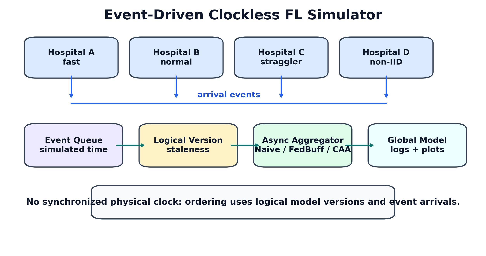
| Method | Role | What it tests |
|---|---|---|
| Sync | upper reference | no async staleness, but has a barrier |
| Naive Async | stateless async | throughput without correction |
| Staleness | logical-age correction | whether age alone is enough |
| FedBuff | buffered async baseline | whether buffering stabilizes |
| CAA-v1 | agreement-aware | whether direction helps |
| CAA-v2 | final method | direction + trajectory + fairness |
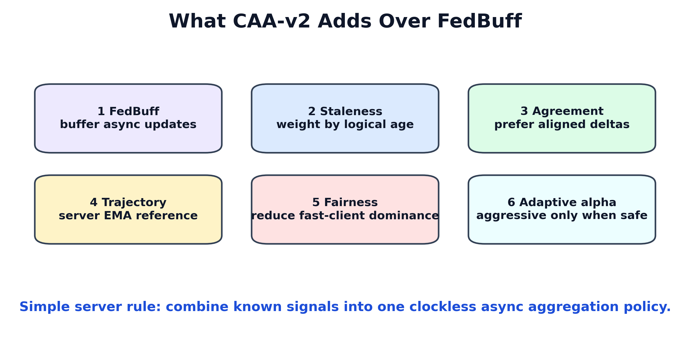
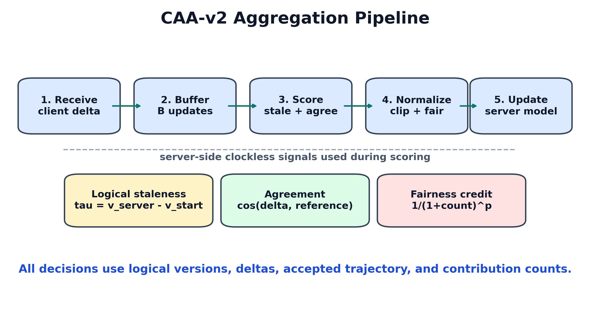
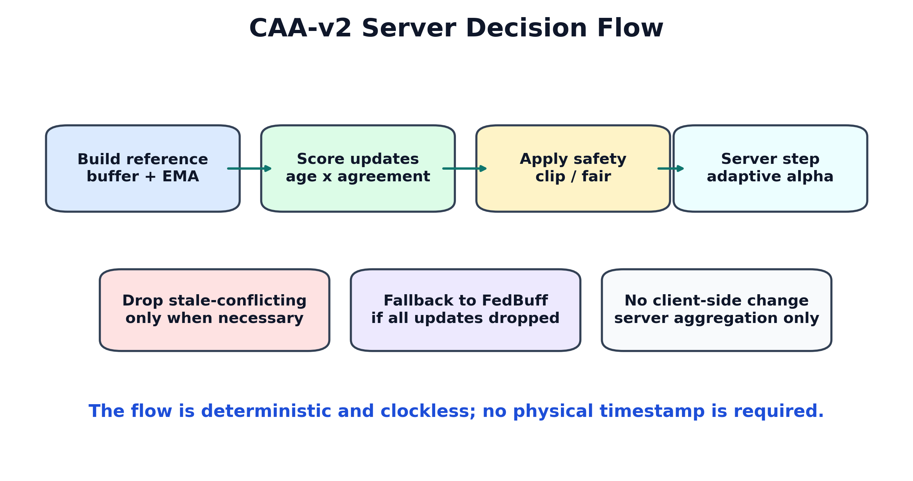
For each client update:
delta_i = client_model_i - model_at_client_start_i
tau_i = server_version - client_start_version_i
CAA-v2 weight:
raw_weight_i = n_i x staleness_decay(tau_i)
x agreement(delta_i, ref) x fairness_i
Server update:
w <- w + alpha_buffer x weighted_average(delta_i)
buffer_ref = weighted_average(delta_i, n_i x age_i)
server_ema = EMA(previous accepted server deltas)
ref = blend(buffer_ref, server_ema)
Intuition:
buffer_ref: the group direction of the current buffered updates.server_ema: where the global model has recently been moving.| Signal | Source | Uses physical clock? |
|---|---|---|
| staleness | server/client logical version | No |
| agreement | delta dot product | No |
| server trajectory | accepted server deltas | No |
| fairness credit | accepted contribution count | No |
| adaptive alpha | mean staleness + agreement | No |
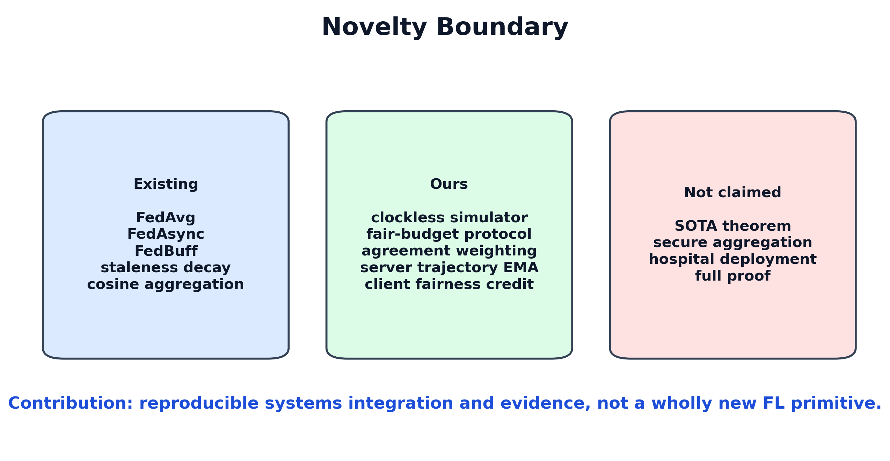
clients = 10
local_epochs = 1
batch_size = 128
lr = 0.01, cosine scheduler
seeds = 42, 43, 44
async delay = same heterogeneous setting
fair budget = async events = sync rounds x clients
Official comparisons do not mix different backbones, delay settings, seeds, local epochs, or update budgets.
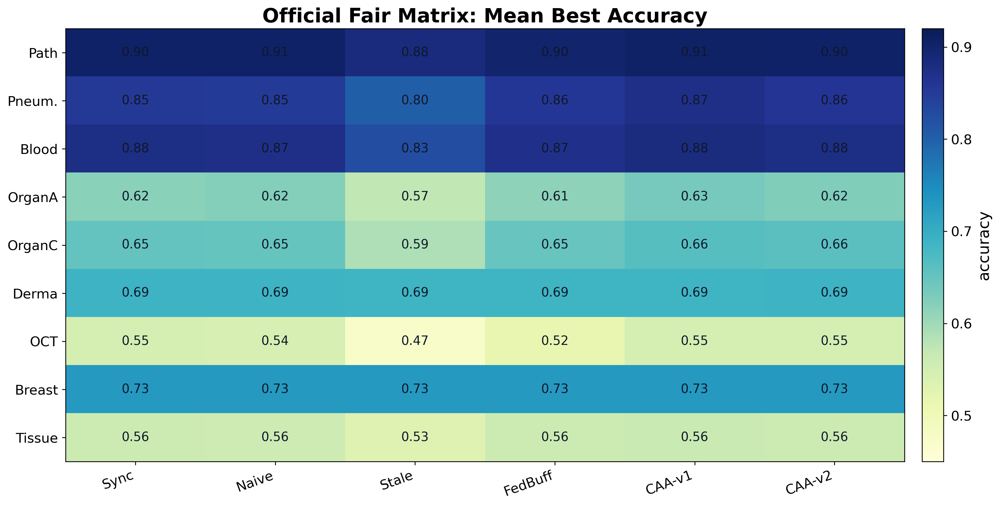
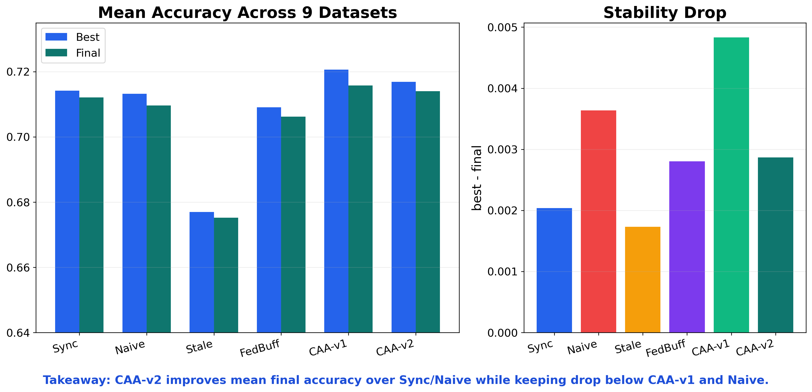
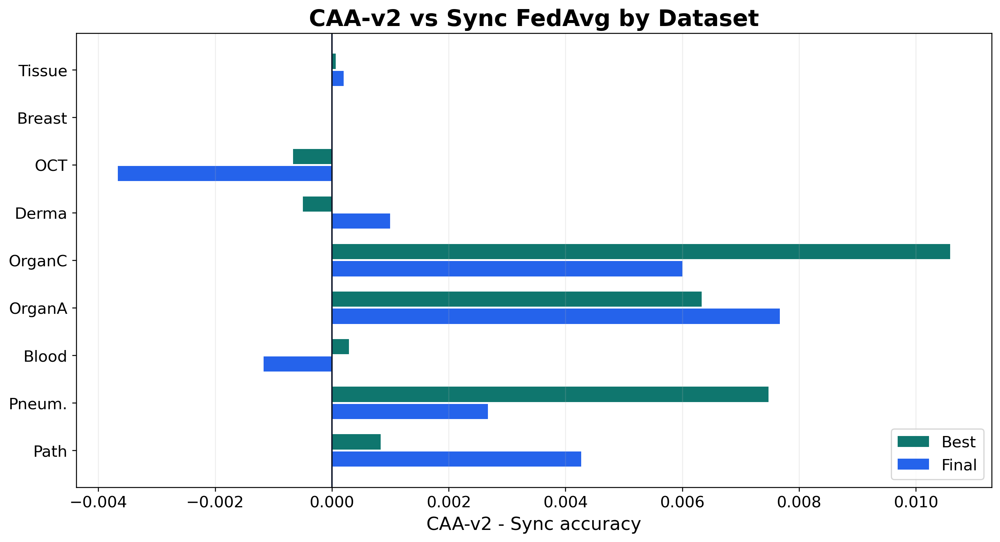
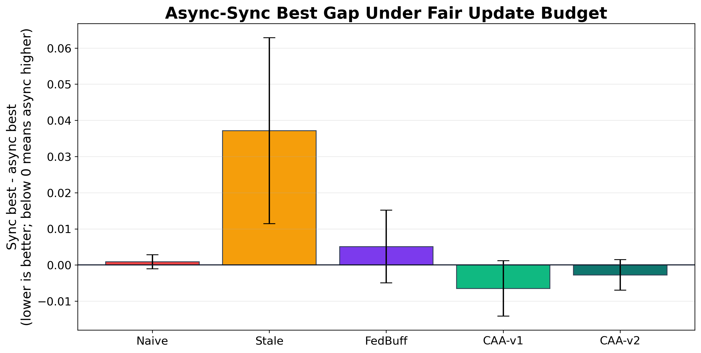
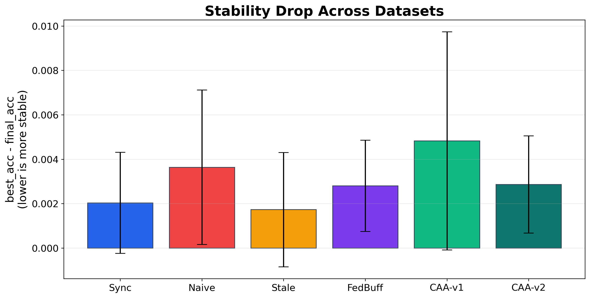
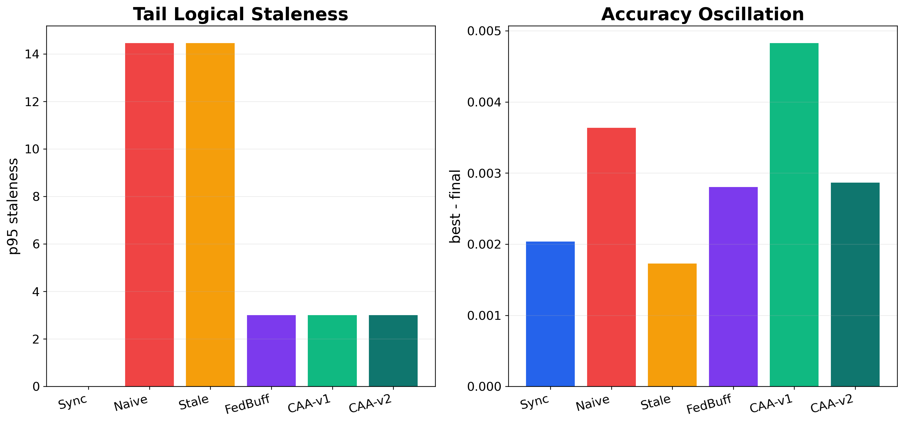
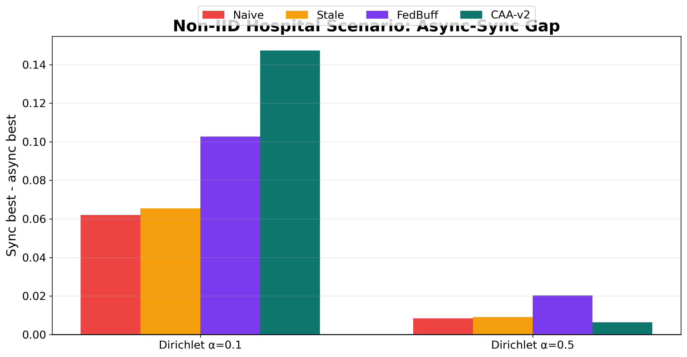
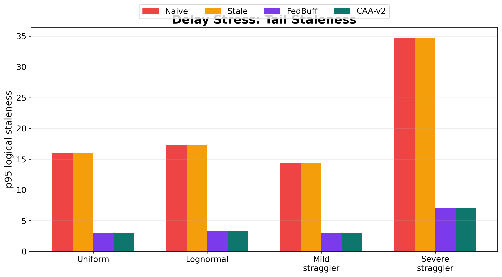
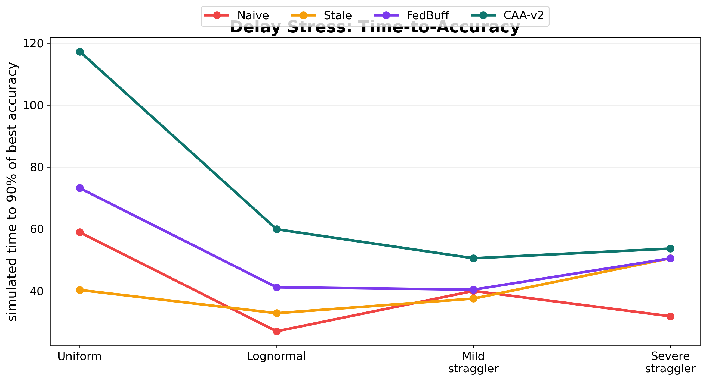
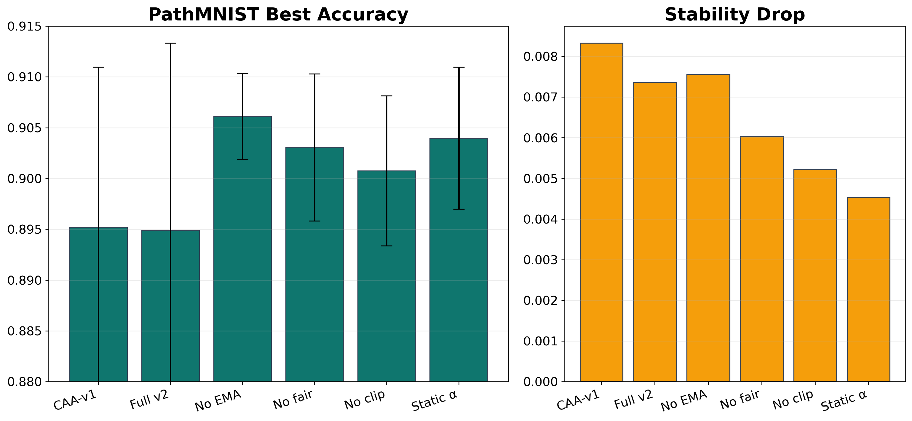
Official fair matrix:
CAA-v2 best = 0.7169
CAA-v2 final = 0.7140
Sync final = 0.7121
Naive final = 0.7096
Conclusion: CAA-v2 is not a universal winner, but it is more stable than Naive Async, less conservative than staleness-only, and close to or better than Sync on most datasets.
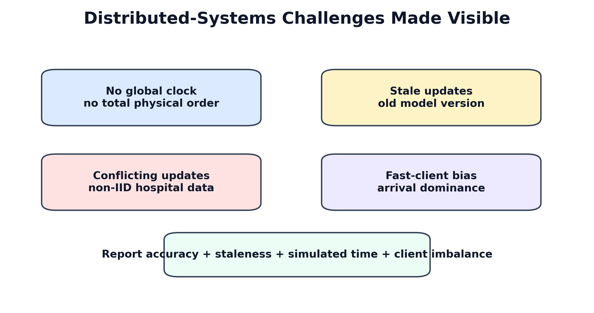
Three issues happen at the same time:
No global clock -> cannot totally order distributed events
Stale update -> trained from an old global model
Conflict update -> non-IID direction differs from others
CAA-v2 design: logical staleness + direction agreement + server trajectory.
Fast-client domination:
higher arrival rate from fast hospitals -> possible long-term model dominance
Privacy tension:
CAA-v2 needs delta direction / norm statistics
secure-aggregation compatibility still requires future design
Therefore, our current claim is a system simulator / design extension, not a complete privacy solution.
Under a fair update budget, CAA-v2 makes clockless asynchronous FL approach Sync FedAvg across diverse MedMNIST datasets, while reducing the instability of Naive Async and avoiding the over-conservatism of staleness-only aggregation.
Aligned Chinese wording:
CAA-v2 讓無全域時鐘的非同步 FL 接近 Sync FedAvg，同時比 Naive Async 穩、比 staleness-only 不保守。